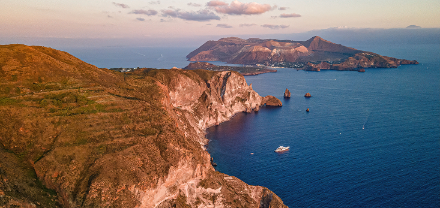

La tutela delle isole minori
Sei isole siciliane lette attraverso la tutela: cosa si protegge, chi decide, cosa cambia per chi arriva e per chi ci vive.

Sulle isole minori siciliane la terra è poca e la natura è fragile. Proteggerla significa scegliere: cosa conservare, chi può arrivare, cosa può fare chi ci abita. Dai vulcani delle Eolie alle viti di Pantelleria, fino alle spiagge delle Pelagie, ogni isola ha le sue regole, e le regole raccontano come ci si vive.